3.1.4 Instalar y configurar Logstash
1. Introducción
En este apartado se describe cómo configurar la autenticación básica de Logstash Elasticsearch. Si se tiene asegurado el clúster de Elasticsearch con autenticación/autorización, para que Logstash pueda publicar los eventos en el clúster de Elasticsearch, hay que proporcionar credenciales de usuario válidas que estén autorizadas para publicar eventos en índices específicos.
Logstash proporciona algunos complementos para controlar el flujo de transmisión de datos. Este control de flujo es principalmente para:
- Reducir la cantidad de datos y eliminar el contenido de datos innecesario.
- Controlar la velocidad de las fuentes de datos y reducir la frecuencia de envío de datos al objetivo.
2. Instalación
Logstash se utiliza para procesar los registros enviados por los beats. Para proceder a su instalación, el comando es el siguiente:
root@elastic-master01:/#apt install logstash
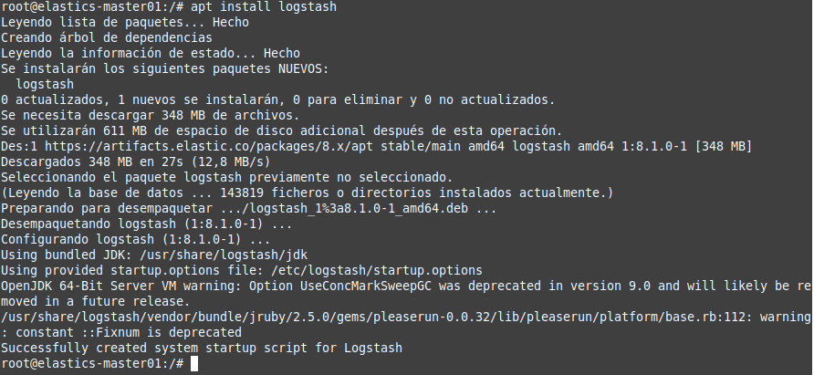
Figura 1. Instalación de Logstash.
3. Configuración
Una vez realizada la instalación, se proceda a configurar Logstash. La canalización (pipeline) de procesamiento de datos de Logstash tiene tres secciones:
- INPUT: La sección de entrada se usa para ingerir datos de diferentes puntos finales en Logstash.
- FILTERS: Procesan y transforman los datos recibidos.
- OUTPUT: Almacena los datos procesados en un destino específico, que puede ser Elasticsearch.
{kind=link}
Figura 2. Procesamiento de Logstash.
Las configuraciones de las canalizaciones de ENTRADA, FILTROS y SALIDA hay que realizarlas de acuerdo con el propio caso de uso individual, es decir, de acuerdo a las necesidades y equipos/aplicaciones que se deseen monitorizar en la organización.
Puedes consultar los siguientes ejemplos de configuración de Logstash y ajustarlos a la configuración según las necesidades de tu infraestructura.
Puedes leer más sobre Logstash Pipeline aquí.
Cualquier configuración de Logstash debe contener al menos un plugin de entrada y un plugin de salida, los filtros son opcionales. Además, se pueden tener archivos de configuración separados para INPUT, FILTERS y OUTPUT, aunque también se puede tener un único archivo de configuración para todas las secciones. Para este escenario, se usan archivos de configuración separados.
Un elemento fundamental en el proceso es la creación del pipeline que permitirá establecer la conexión con los 3 plugins, es decir, input, filter y output. El pipeline se define en el fichero pipelines.yml que se encuentra en /etc/logstash. Como se observa en la figura inferior, se creará un pipeline cuyo id es main y cuyos ficheros son los que encuentre en el directorio /etc/logstash/conf.d que es donde se crearán los fiheros de input, filter y output.
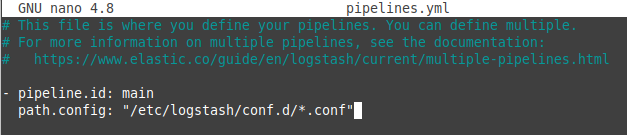
Figura 3. Configuración del pipeline main.
3.1 Configurar el complemento de entrada de Logstash
En este escenario, se utilizará filebeat (se verá en el capítulo 3.1.5) para recuperar los registros de los ficheros de log. Para usar Logstash como salida para realizar un procesamiento adicional en los datos recopilados por filebeat, primero se debe configurar Logstash para recibir eventos de filebeat y para ello, hay que crear un archivo de configuración para definir cómo se incorporarán los datos en Logstash. Por ejemplo, para configurar Logstash para recibir datos de Beats en el puerto TCP 5044, hay que crear un archivo de configuración de entrada, por ejemplo, /etc/logstash/conf.d/01-beats-input.conf.
root@elastic-master01:/#nano /etc/logstash/conf.d/01-beats-input.conf
añadiendo las siguientes líneas:
input {
beats {
port => 5044
}
}
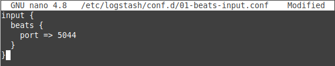
Figura 4. Configuración del fichero input.
3.2 Configurar filtros de Logstash
Ahora que se ha definido un complemento de entrada de Logstash como Beats, hay que proceder a configurar un complemento de filtro para procesar los eventos recibidos de beats. Para este caso, se utiliza el complemento de filtro grok. Grok usa patrones de expresiones regulares para hacer coincidir campos y delimitadores. Puedes leer sobre otros complementos aquí.
Con fines de demostración, se va a configurar beats para recopilar eventos de autenticación SSH. Por lo tanto, se va a crear un filtro para procesar este tipo de eventos como se muestra a continuación.
root@elastic-master01:/#nano /etc/logstash/conf.d/ssh-auth-filter.conf
El patrón grok utilizado en este ejemplo coincide con las líneas de registro de autenticación ssh para usuarios existentes y los no existentes.
#Log para conexiones con usuarios existentes en el sistema
Mar 17 11:43:43 elastics-master01 sshd[1072]: Accepted password for administrador from 192.168.0.14 port 38008 ssh2
Mar 17 12:28:50 elastics-master01 sshd[2401]: Failed password for administrador from 192.168.0.14 port 39448 ssh2
#Log para conexiones con usuarios no existentes en el sistema
Mar 19 13:41:22 elastics-master01 sshd[8746]: Failed password for invalid user naruto from 192.168.0.10 port 42570 ssh2
Dado que el log genera dos líneas diferentes en el caso de fallo y dependiendo si el usuario existe en el sistema o no, se realizan en el filtro 2 reglas, una para los usuarios existentes (Regla 1) y otra para los no existentes (Regla 2).
filter {
# Regla 1. Usuarios válidos o existentes en el sistema
grok {
match => { "message" => "%{SYSLOGTIMESTAMP:timestamp}\s+%{IPORHOST:dst_host}\s+%{WORD:syslog_program}\[\d+\]:\s+(?<status>\w+\s+password)\s+for\s+%{USER:auth_user}\s+from\s+%{SYSLOGHOST:src_host}.*" }
add_field => { "activity" => "SSH Logins" }
add_tag => "linux_auth"
}
# Regla 2. Si en la regla 1 no hay coincidencias, se aplica la regla 2 (usuarios no válidos)
if "_grokparsefailure" in [tags] {
grok {
# Se elimina/limpia (remove_tag) para que se pueda establecer de nuevo en caso de no haber coincidencias en este match.
remove_tag => [ "_grokparsefailure" ]
match => { "message" => "%{SYSLOGTIMESTAMP:timestamp}\s+%{IPORHOST:dst_host}\s+%{WORD:syslog_program}\[\d+\]:\s+(?<status>\w+\s+password)\s+for\s+invalid\s+user\s+%{USER:auth_user}\s+from\s+%{SYSLOGHOST:src_host}.*" }
add_tag => [ "ssh_brute_force_attack", "filter_sshd","correlation" ]
add_field => { "EventDesc" => "5710 SSHD Attempt to login using a non-existent user" }
add_field => { "event_id" => "5710" }
}
# Si en la regla 2 no hay coincidencias, se descartan todos los eventos (drop)
# Si no se hace esto, aparecerían los eventos del tipo:
# pam_unix(sshd:auth): check pass; user unknown
# pam_unix(sshd:auth): authentication failure; logname= uid=0 euid=0 tty=ssh ruser= rhost=192.168.0.10
# etcétera.
if "_grokparsefailure" in [tags] { drop {} }
}
}
Kibana 8.1 incluye Grok Debugger al que se puede acceder en Herramientas de desarrollo > Depurador de Grok. para poder generar los patrones de grok correctos. También se pueden consultar los patrones comunes de logstash grok aquí
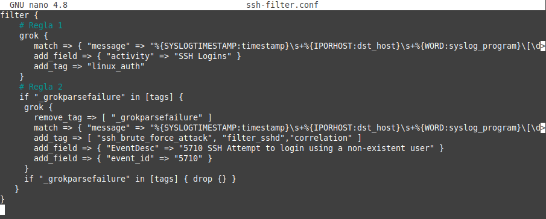
Figura 5. Fichero de filtros.
3.3 Configurar la salida de Logstash
Existen diferentes complementos de salida que permiten a Logstash enviar datos de eventos a destinos particulares. Para este escenario, Logstash enviará los logs recogidos por el «input» configurado anteriormente por el puerto 5044 a Elasticsearch.
Para ello, hay que crear el archivo de configuración de salida de Logstash para establecer el envío de datos a Elasticsearch ejecutándose en un host local (servidor). Como ejemplo se creará el archivo con nombre 20-elasticsearch-output.conf.
Si Elasticsearch está escuchando en una interfaz sin loopback, hay que reemplazar localhost, hosts => [“localhost:9200″] con una IP de interfaz, por ejemplo; hosts => [“192.168.0.254:9200″].
El índice predeterminado para escribir eventos es logstash-%{+YYYY.MM.dd}.
Uso de Secrets Keystore
Dado que hay que guardar valores sensibles en el fichero 20-elasticsearch-output.conf, como el nombre de usuario y contraseña del usuario de elastic, en lugar de confiar en los permisos del sistema de archivos para proteger estos valores, se utilizará el almacén de claves de Logstash para almacenar de forma segura los valores secretos para su uso en los ajustes de configuración.
La sintaxis para referenciar claves es idéntica a la de las variables de entorno: ${KEY}, donde KEY es el nombre de la clave. Ejemplo, si en el almacén de claves se tiene una clave llamada ELS_PWD con el valor contraseña-elasticsearch, en el archivo de configuración, se utilizaría password => "${ELS_PWD}".
A continuación, se crea el almacén logstash.keystore mediante el siguiente comando, donde a la pregunta que se formula, hay que contestar con 'y',
root@elastic-master01:/#/usr/share/logstash/bin/logstash-keystore --path.settings /etc/logstash create
donde,
- --path.settings: Es la ruta donde se quiere guardar la keystore.
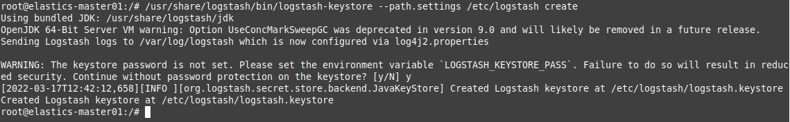
Figura 6. Creación del almacén de claves para Logstash.
A continuación, hay que agregar la clave con el nombre y contraseña del usuario. En primer lugar se crea la clave con el nombre del usuario. El comando cuando solicite el nombre de la clave hay que poner elastic.
root@elastic-master01:/#/usr/share/logstash/bin/logstash-keystore --path.settings /etc/logstash add USER
donde, --path.settings: Es la ruta donde está el almacén.
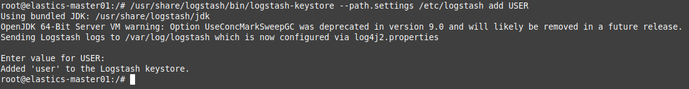
Figura 7. Creación de la clave USER en el almacén de claves de Logstash.
A continuación, se añade la clave con la contraseña del usuario. El comando cuando solicite el nombre de la clave hay que poner la contraseña de elastic (se modificó en el apartado donde se configuró elasticsearch).
root@elastic-master01:/#/usr/share/logstash/bin/logstash-keystore --path.settings /etc/logstash add ELS_PWD
donde, --path.settings: Es la ruta donde está el almacén.
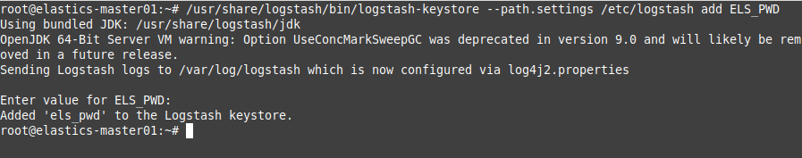
Figura 8. Creación de la clave ELS_PWD en el almacén de claves de Logstash.
Gestión de claves del almacén
Para imprimir la lista de claves, el comando es el siguiente:
root@elastic-master01:/#/usr/share/logstash/bin/logstash-keystore --path.settings /etc/logstash list
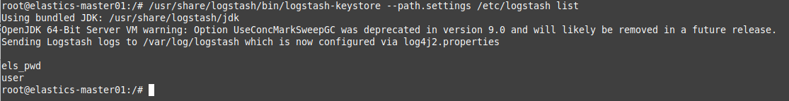
Figura 9. Listar las claves del almacén de claves de Logstash.
Si se quiere eliminar una clave, por ejemplo ELS_PWD, el comando es el siguiente:
root@elastic-master01:/#/usr/share/logstash/bin/logstash-keystore --path.settings /etc/logstash remove ELS_PWD
Referencias
Crear el fichero 20-elasticsearch-output.conf
Una vez se han creado las claves en el almacén, el siguiente paso es construir el fichero 20-elasticsearch-output.conf. Como ejemplo, se desean adquirir los eventos de autenticación SSH y para ello, se creará un índice al que se nombrará como "ssh_auth-%{+YYYY.MM.dd}", donde ssh_auth es el prefijo del índice y puede ser cualquier nombre y-%{+YYYY.MM.dd}, es un guión para separar el prefijo de la fecha que pondrá el sistema.
A continuación, hay que crear un fichero en modo edición y como se ha comentado anteriormente, el fichero se llamará 20-elasticsearch-output.conf.
root@elastic-master01:/#nano /etc/logstash/conf.d/20-elasticsearch-output.conf
A continuación, se añaden las siguientes líneas:
output {
elasticsearch {
hosts => "elastics-master01:9200"
manage_template => false
index => "ssh_auth-%{+YYYY.MM.dd}"
ssl => true
user => "${USER}"
password => "${ELS_PWD}"
cacert => '/etc/logstash/certs/http_ca.crt'
}
}
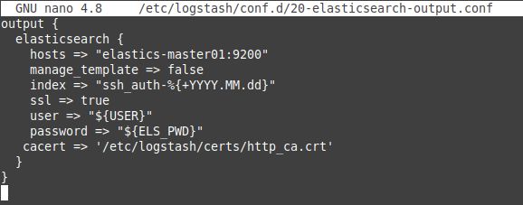
Figura 10. Fichero de salida de Logstash.
donde,
- cacert => '/etc/logstash/certs/http_ca.crt'. El certificado http de elasticsearch hay que copiarlo al directorio de configuración de logstash. Para este caso, se ha creado el directorio certs en /etc/logstash/, y se ha copiado el fichero http_ca.crt allí, es decir,cp /etc/elasticsearch/certs/http_ca.crt /etc/logstash/certs/. Además, hay que cambiarle el grupo y establecer los permisos, chgrp logstash /etc/logstash/certs/http_ca.crt y luego hacer chmod 660 /etc/logstash/certs/http_ca.crt.
- password =>. Se utiliza la clave «${ELS_PWD}» del almacén de claves.
- user =>. Se utiliza la clave «${USER}» del almacén de claves.
Con esto, se creará un índice una vez que se inicie el servicio logstash y que se llamará ssh_auth-2022.03.17, ya que esta operación se ha realizado el 17/03/2022.
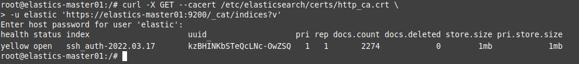
Figura 11. Consulta de índices.
Dado que el índice se nombra con una parte dinámica, es decir, la fecha (index => "ssh_auth-%{+YYYY.MM.dd}"), cada día se creará de menara automática un índice ssh_auth, es decir, el 17 de marzo se creará el índice ssh_auth-2022.03.17, el 20 de marzo el ssh_auth-2022.03.18, etcétera.
Si no se quiere crear un índice cada día, el nombrado del mismo en el fichero output no debe contener una parte dinámica de fecha, es decir, se nombraría así: index => "ssh_auth".
En resumen, filebeat envía eventos a Logstash. Después de que Logstash use el complemento de entrada de beats para recibir los eventos, usa el complemento de salida de Elasticsearch para enviarlo a Elasticsearch. Este complemento utiliza una API para crear índices de manera eficiente. Logstash escucha el puerto 5044 para recibir transmisiones de filebeat y las indexa en Elasticsearch. Como se ha visto en la configuración de filter, Logstash además de recopilar, enriquece los datos de conversión.
3.4 Verificar la configuración de Logstash
Una vez terminado con las configuraciones, hay que ejecutar el siguiente comando para verificar la configuración de Logstash antes de poder iniciarla.
root@elastic-master01:/#/usr/share/logstash/bin/logstash --path.settings /etc/logstash/ --config.test_and_exit -f /etc/logstash/conf.d/
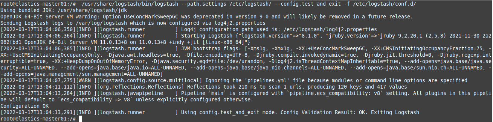
Figura 12. Verificar configuración de Logstash.
Si todo ha ido bien, al final de la ejecución del comando debe aparecer el siguiente texto:
Config Validation Result: OK. Exiting Logstash
3.5 Iniciar el servicio Logstash
Si la verificación ha sido correcta, ya se puede habilitar e iniciar el servicio Logstash.
root@elastic-master01:/#systemctl enable --now logstash
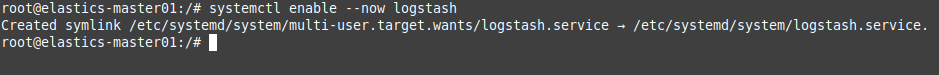
Figura 13. Iniciar y habilitar el servicio.
Opcional para pruebas de ficheros de configuración expecíficos
Para ejecutar Logstash y cargar un archivo de configuración específico para la depuración, se puede ejecutar el siguiente comando, donde config-file.conf es el fichero de configuración a verificar.
root@elastic-master01:/#sudo -u logstash /usr/share/logstash/bin/logstash -f /etc/logstash/conf.d/config-file.conf
Por último, se comprueba el estado del servicio:
root@elastic-master01:/#systemctl status logstash
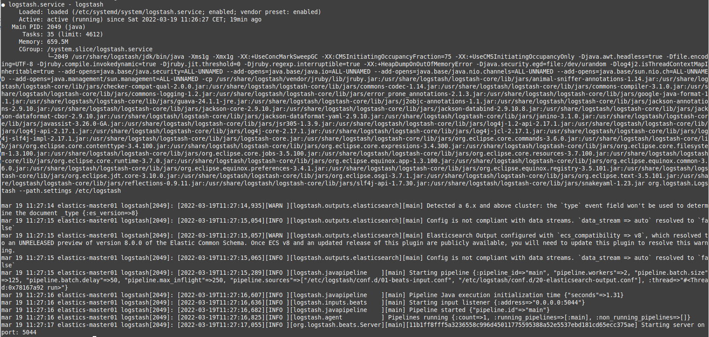
Figura 14. Estado del servicio Logstash.
Hay que comprobar que al final ponga Starting server on port: 5044.
También se puede consultar el archivo de configuración de logstash en busca de errores, el archivo es: /var/log/logstash/logstash-plain.log.
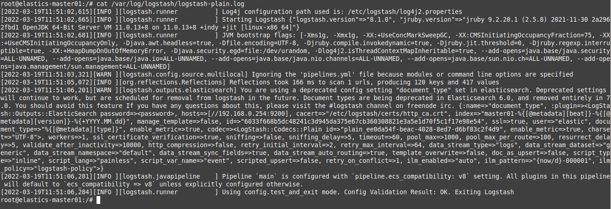
Figura 15. Listar el log del servicio Logstash.
Una terminado con la configuración, ya se puede proceder a instalar y configurar los cargadores de datos de Filebeat (apartado 2.1.4).
4. Establecer tiempo de parada
Por último, hay que ajustar el tiempo máximo de parada del servicio y para ello, hay que editar el fichero de configuración del servicio y cambiar el valor de TimeoutStopSec de infinity a 30 segundos.
root@elastic-master01:/#nano /etc/systemd/system/multi-user.target.wants/logstash.service
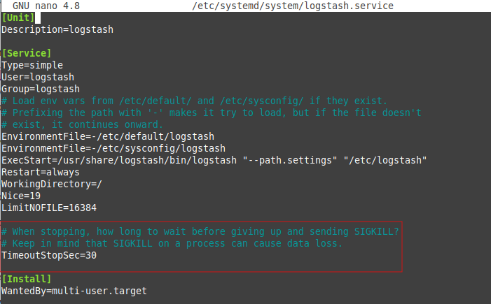
Figura 16. Configurar el Unit del servicio Logstash.
A continuación, hay que recargar la configuración del administrador de systemd con el siguiente comando:
root@elastic-master01:~#systemctl daemon-reload
Si se comprueba de nuevo el timeout, se puede ver que ahora ya tiene establecido los 3 minutos.
root@elastic-master01:~#systemctl show logstash | grep ^Timeout
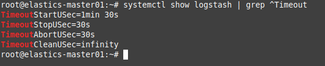
Figura 17. Comprobar el Timeout de los parámetros del servicio Logstash.
5. Referencias
Obra publicada con Licencia Creative Commons Reconocimiento No comercial Compartir igual 4.0